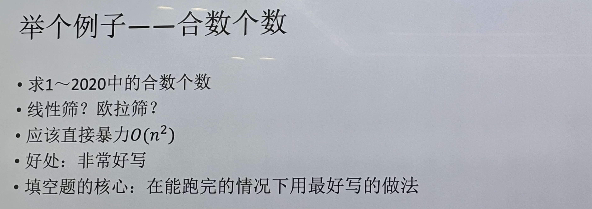
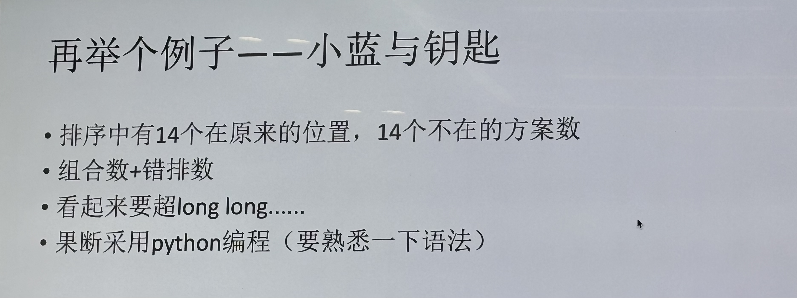
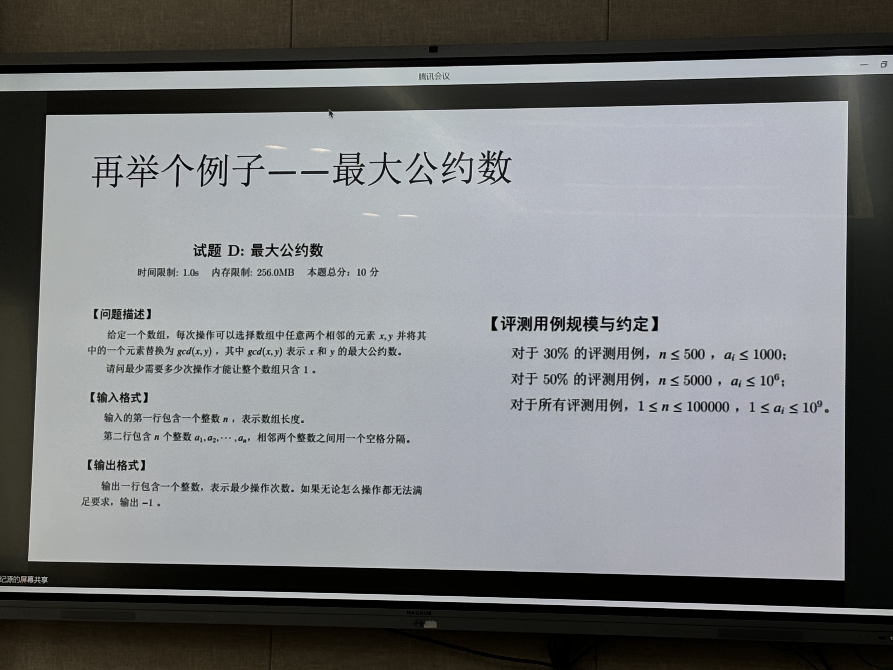
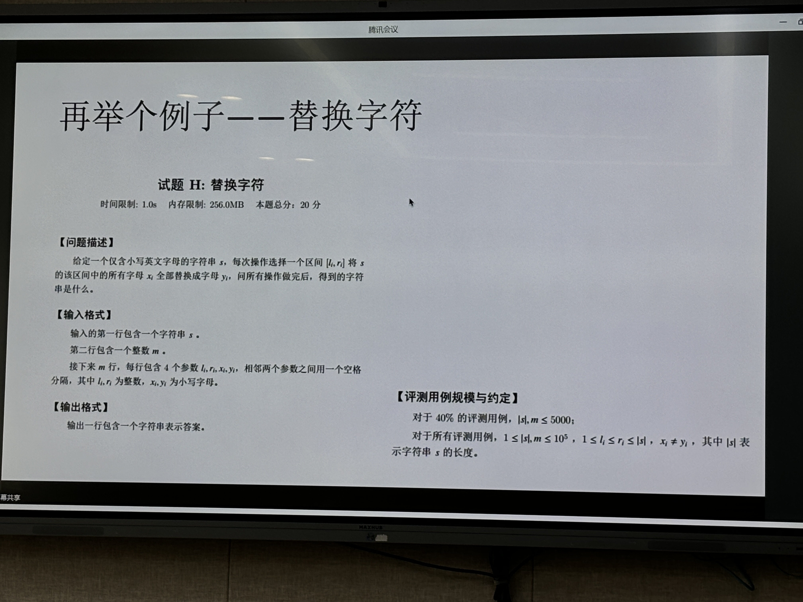

软件学院朋辈经验分享沙龙
第二期（竞赛概览）
竞赛简介

比赛形式
通常以 统一考试、提交作品、提交代码在线评测 等形式进行评分排名。
统一考试如 ACM、蓝桥杯 等
竞赛等级
政府部分主办、企业主办、学校学院竞赛｜国家级、省级、校级比赛
为什么参加
- 竞赛的一些项目是可以写到简历中的。
- 积累获奖经历
- 提前学习科研文献
获取信息
竞赛官网很重要
- 从保研政策文件或全国普通高校学科竞赛排行榜获取到感兴趣的竞赛名称
- 大赛官网:直接搜索大赛全称
- 大赛微信公众号:直接搜索大赛全称
- 年级群或竞赛通知群:作为主流竞赛时间节点的提醒，作为获取企业比赛信息的渠道
关于竞赛加分与保研

尽量大四之前参加比赛，大三到大四暑假基本就不会参与保研加分了。
保研综合测评成绩构成:智育成绩+加分成绩（对于我们来说保研加分的途径基本就只有竞赛了）
- 智育成绩：前三学年相关课程加权平均成绩
- 加分成绩：竞赛获奖、科创成果、社会活动，同一类别只计一项最高分，总和不超过5分
- 竞赛获奖:学科竞赛(3、2.5、1.5、1、0.3、0.1)+文体竞赛(2、1.5、1、0.7、0.2、0.1)
- 科创成果:学术论文(一作)、发明专利(一作+已授权)，分值不定，但论文≤2，专利≤1
- 社会活动:全国大学生年度人物、全国励志成长成才优秀学生、服兵役等
信息来源：电子科技大学教务处官网、学院官网 (搜索推免、免试攻读等关键字)（https://sise.uestc.edu.cn/info/1025/10959.htm）
保研时间线
- 大三上结束：智育成绩已成定局(不一定公布)
- 大三至大四暑假：各高校保研夏令营
- 大四9月份：各高校保研预推免、出保研排名
- 大四9月中旬：分配保研名额、确认保研名单
- 大四9月底：国家推免系统开放，正式推免
竞赛形式
1、 非命题作品赛
偏向技术（信息安全大赛作品赛道、计算机设计大赛等）
自主发现社会痛点问题，选题最重要。

偏向创新创业（互联网+大赛、挑战杯大赛等）

- 要有商业价值，实用性广，好卖，比竟品强在哪。
- 对技术细节要求不高。
- 文档一般要求”商业计划书“
- 要求作品完成度很高。
- 一般都是用已经完成度很高的项目包装一下参赛，小型 demo 不容易获奖。
2、命题作品赛（服创大赛、中国软件杯、C4网络安全挑战赛等比赛的部分赛道）

3、命题非作品赛（Kaggle，华为软件精英挑战赛、人民网人工智能算法挑战赛等）

- 就相当于打榜，人工智能居多，在线评测系统
4、程序设计竞赛（ACM ICPC、CCPC、蓝桥杯、CCF考试等）

注意：蓝桥杯 是根据测试用例通过数量判分的，所以可以使用暴力的方法通过大多数的样例。
5、数学建模大赛（全国大学生数学建模大赛、美国大学生数学建模大赛）
- 给定几个命题，团队从中选取一个命题，在几天内设计解决方案并撰写论文
- 需要 matlab，python 等具有代码能力的同学。

主流的软件学科竞赛
- 有时一个作品可以一稿多投
- 蓝桥杯 比较方便，报就行。相当于个人考试
- 挑战杯分为 大挑 和 小挑
- 互联网+ - 软件类的拿奖很少
- 互+ 和 挑战杯 都是需要学校往上推的。
- 蓝桥杯 新加了很多新赛道。以前只有程序设计一条赛道（就是算法题）
- 互联网+ 10月份出结果可能就来不及保研了。注意
- 中国软件杯
着重考虑：中国大学生计算机设计大赛、服务外包创新大赛、第一张ppt右下角的竞赛


主流比赛的时间节点


学院的支持办法
数学建模、ACM - 集训队
创新创业学院
工作室 - 好找队友、志同道合的人多、不容易水

学科竞赛的准备方法
考试类竞赛
- 性价比很高（如 蓝桥杯、数竞、大英 等，去了就考，不浪费时间）
作品类竞赛
- 建议上半学期准备准备。先有 demo 再报名。
- 对于 ACM、数学建模 建议参加集训队，系统性训练很重要
- 作品赛 找队友很重要。并持续关注生活中的痛点，注重团队技术栈的配置（如有后端的同学，有前端的同学等，要有会写文档写ppt答辩的同学、作品好答辩好）。
- 不会技术没关系，主要是要拿出时间认真干活。


注：
- 现在找工作如果不投算法的话，是不太看重科研的。
- 不过如果有志读研的话在研究生期间搞搞算法还是很好的。
- 但是把算法用到一些实际项目中参加作品赛还是很好的。
- 学校团委官网负责组织校赛，可以去团委官网找相关信息。（校赛时间）
第三期（蓝桥杯）
蓝桥杯 不是一个 实时反馈的比赛，不像 ACM 一样，交上去就有答案。
赛制
- 时间 4 h
- 10 道题：2 / 3 道填空题；7 / 8 道编程大题（一般按照顺序递增，不像 ACM）
- 每个题都有部分分，过一部分案例也可以得分
题目
- 一般是各种算法的融合，然后在考虑题目怎么融合这些算法
- 很少是复杂的大数据结构
- 更多是偏思维多一点
- 一般 100pt 要求更高
- 基本是不会想最后面那几道高难度题目
策略
填空题
填空题的策略：能在跑完的情况下用最好写的做法
- 一定要把填空题的分拿到
- 提交的时候要注意不要有多余的字符（填空题）
- 不要纯用手算，要善用电脑
- python 编程的方便性


大题
- 先通读所有题，对每个题有一个预期，多长时间能拿多少分，合理分配时间，先做哪个部分，再做哪个部分。不能一个题干到死。
- 前两道题尽量尝试拿所有分数。
- 如果不行及时跑（高中数学考试的思路）
- 一个题超过20分钟没思路就应该去打暴力了。
- 40～50分钟没敲完就应该考虑跳了。
- 注意 蓝桥杯 的测试案例不会太多，很少那种像 ACM 那样的特殊案例
例子
例1：

这是一道贪心题，怎么思考？
- 暴力：枚举可能没分
- 观察数据范围，发现纯暴力完全不好写，得去想贪心策略（1 的位置影响->生成 1->特殊情况，贪心类问题只能去想正解）
例2：

- 这个题一看就可以用暴力写，意识到这一点之后，立马开始写暴力，一定是暴力先行，而不是写正解。
- 40pts（分）很好写，100pts不好想
- 要好对拍
对拍
对拍很重要
对拍：就是用暴力程序和标准程序进行对比
- 对于每个题：先写暴力，再写正解，再写对拍
- 两个程序用文件输出命令导入到文件中
- 输入程序用“随机生成器”输出到文件中，输入采用文件输入输出
- freopen & ofstream
- windows 可以直接用 fc 命令，unix 用 diff 命令
- 如果结果不一样，应该先减少规模
结束前检查（大概比赛最后四十分钟）
- 填空题有没有多余的输出
- 调试输出是否删除
- 时间复杂度估计（CPU 基本运行时间 1s $10^8$ 次）
- 数据是否溢出（重要）（数组开到 栈 里还是开到 mian 里）
- 题目有无提交错位置
平时训练
- 中文网站落谷 or 牛客是基础
- 推进大家刷 codeforces & atcoder（atcoder 有很多思维题，训练思维量，日本人出题很有趣）
- 思维题偏多一点
- ACM选手要会没有测评的盲敲
- 刷板子，刷原题，模拟考试（主要是时间分配问题）
算法核心点
- 不要关注：LGT、复杂的平衡树
- 需要关注：各种图论、线段树、贪心策略、动态规划
- 简单的线性代数要会写，哈希，KMP要会写，
- 原因：O1赛制+10道题
- 偏思维算法应用肯定多
注意
要提前熟悉考试环境
- Linux 命令行
- Windows 要知道 ide 怎么用
- 评测环境要了解
- long long的输出
- 找空间（怎么开栈空间），编译选项命令（gcc，g++）
9点～13点一定吃早饭